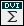

Research Papers
- An Smax variation for one Souslin tree, J. Symbolic Logic, vol. 64 (1999), #1, pp. 81-98 .
(JSTOR)
- Separating stationary reflection principles,
Journal of Symbolic Logic, vol.65 (2000), #1, pp. 247-258 .
(JSTOR)
- The size of T tilde,
Archive for Mathematical Logic 39 (2000) #7, pp. 541-568 .
- Martin's Maximum and the Pmax axiom (*), Annals of Pure and Applied Logic, vol. 106
(2000) #1-3, pp. 135-149 .
- Chain conditions in maximal models, with Stevo Todorcevic,
Fundamenta Mathematicae, vol.
168 (2001) #1, pp. 77-104 .
- Showing OCA in Pmax-style
extensions,
Kobe Journal of Mathematics 18 (2001) pp. 115-126 .
- Katetov's problem,
with Stevo Todorcevic, Transactions of the American
Mathematical Society 354 (2002) pp. 1783-1791 .
- A uniqueness theorem for
iterations, Journal of Symbolic Logic, vol. 67 (2002), #4, pp. 1344-1350 .(JSTOR)
- Bounding by canonical functions,
with CH, with Saharon Shelah, Journal of Mathematical Logic,
Vol. 3 (2003) 2, 193-215 .

- Almost-disjoint coding and
strongly saturated ideals,
Proceedings of the American Mathematical Society 133 (2005) 9,
2737-2739 .
- Saturation, Suslin trees and
meager sets, Archive for Mathematical Logic 44 (2005) 5, 581-595.
-
The canonical function game,
Archive for Mathematical Logic 44 (2005) 7, 817-827.
Irreducibility of product spaces
with finitely many points removed, Topology Proceedings 30 (2006) 1, 327-333.
Compact spaces, elementary submodels, and the countable chain condition, with Lucia
Junqueira and Franklin D. Tall, APAL 144 (2006) 1-3, 107-116.
Absoluteness for universally Baire sets and the
uncountable I, with
Ilijas Farah, Quaderni di Matematica 17 (2006), 47-92
The nonstationary ideal in the Pmax extension, Journal of Symbolic Logic 72 (2007) 1, 138-158.
(Project Euclid)
Guessing clubs in the generalized club-filter, with
Bernhard Koenig and Yasuo Yoshinobu, Fundamenta Mathematicae 195 (2007) 2, 177-191
Increasing delta^1_2 and Namba-style forcing, with Richard
Ketchersid and Jindrich Zapletal, Journal of Symbolic Logic 72 (2007) 4, 1372-1378
(Project Euclid)
On extensions of elementary submodels by forcing, with Lucia Junqueira
and Marcelo Passos, Logic Journal of the IGPL 15 (2007) 5-6, 637-651
The stationary set splitting game, with Saharon Shelah,
Mathematical Logic Quarterly 54 (2008) 2, 187-193
Bounding the consistency strength of a five element linear basis, with
Bernhard Koenig, Justin Moore and Boban Velickovic, Israel Journal
of Mathematics 164 (2008) 1, 1-18
Absoluteness for universally Baire sets and the
uncountable II, with
Ilijas Farah, Richard Ketchersid and Menachem Magidor, Computational Prospects of Infinity Part II,
Lecture Notes Series, Institute for Mathematical Sciences, National University of Singapore - Vol. 15 (2008), 163--191
Rectangular axioms, perfect set
properties and decompositions, with Joerg Brendle and Stevo
Todorcevic, Bulletin de l'Academie Serbe des Sciences et des Arts, Classe des Sciences Mathematiques et Naturelles, Sciences mathematiques,
vol. 33, (2008), 91--130 (CiteSeerX)
Martin's Maximum and definability in H(aleph_2),
Annals of Pure and Applied Logic 156 (2008) 1, 110-122
Splitting stationary sets from weak forms of Choice, with
Saharon Shelah, Mathematical Logic Quarterly 55 (2009) 3, 299-306
The Filter Dichotomy and medial limits, Journal of Mathematical Logic 9 (2009) 2, 159-165
D-spaces, irreducibility and trees, with Leandro F. Aurichi and Lucia R. Junqueira,
Top. Proc. 35 (2010), 73--82
Regular embeddings of the stationary tower and Woodin's Sigma^2_2 maximality theorem, with
Richard Ketchersid and Jindrich Zapletal, Journal of Symbolic Logic 75 (2010) 2, 711-727
(Project Euclid)
Universally measurable sets in generic extensions, with Itay Neeman and Saharon Shelah,
Fundamenta Mathematicae 208 (2010) 2, 173-192
Ultrafilter limits of asymptotic density are not universally measurable, with Joerg Brendle, RIMS Koukyuuroku Bessatsu No. 1686 (2010), 16-18.
Another c.c.c. forcing that destroys presaturation, with Teruyuki Yorioka, RIMS Koukyuuroku Bessatsu No. 1686 (2010), 73-74.
Locally compact perfectly normal
spaces may all be paracompact, with Franklin D. Tall, Fundamenta Mathematicae 210 (2010), 285-300
Small-sum pairs in abelian groups, with Reza Akhtar, Journal de Théorie des Nombres de Bordeaux 22 (2010), 525-535
Majority decisions when abstention is possible, with Nicholas Matteo and Saharon Shelah, Discrete Mathematics 312 (2012), 1336-1352
Some results about (+) proved by iterated forcing, with Tetsuya Ishiu, Journal of Symbolic Logic 77 (2012) 2, 515-531
(Project Euclid)
Pmax variations for separating club guessing principles, with Tetsuya Ishiu, Journal of Symbolic Logic 77 (2012) 2, 532-544
(Project Euclid)
Forcing axioms and the Continuum Hypothesis, with David Aspero and Justin Moore, Acta Mathematica 210 (2013) 1, 1-29
On the hereditary
paracompactness of locally compact, hereditarily normal spaces,
with Franklin D. Tall, Canadian Mathematical Bulletin 57 (2014) 3, 579-584
Universal functions, with Arnold Miller, Juris Steprans and William Weiss, Fundamenta Mathematicae 227 (2014), 197-245
A Choice function on countable sets, from determinacy, Proceedings of the American Mathematical Society 143 (2015) 4, 1763-1770
Almost Galois omega-stable classes, with John Baldwin and Saharon Shelah, Journal of Symbolic Logic 80 (2015) 3, 763-784
Iterated elementary embeddings and the model theory of infinitary logic, with John Baldwin, APAL 167 (2016) 3, 309-334
Automorphisms of P(λ)/Iκ, with Paul McKenney, Fundamenta Mathematicae 233 (2016) 3, 271-291
Ramsey ultrafilters and countable-to-one uniformization, with Richard Ketchersid and Jindrich Zapletal, Topology and Its Applications 213 (2016),
190-198
Consistency of a strong uniformization principle, with Saharon Shelah, Colloquium Mathematicum 146 (2017) 1, 1-13
Closed sets which consistently have few translates covering the line, with Tomek Bartoszynski and Saharon Shelah,
Fundamenta Mathematicae 237 (2017) 2, 101-125
Square principles in Pmax extensions, with Andres Caicedo, Grigor Sargsyan, Ralf Schindler, John Steel and Martin Zeman,
Israel Journal of Mathematics 217 (2017) 1, 231-261
Real games and strategically selective coideals, with Dilip Raghavan, in Sets and Computations (Vol. 33, Lecture Notes Series, Institute for Mathematical Sciences, National University of Singapore), 2017
Scott processes, in Beyond First Order Model Theory, CRC Press, 2017
Canonical models for fragments of the Axiom of Choice, with Jindrich Zapletal, Journal of Symbolic Logic 82 (2017) 2, 489-509
Coding with canonical functions, with Saharon Shelah, Mathematical Logic Quarterly 63 (2017) 5, 334-341
A model of ZFA with no outer model of ZFAC with the same pure part, with Saharon Shelah,
Archive for Mathematical Logic 57 (2018) 7, 853-859
Discontinuous homomorphisms, selectors and automorphisms of the complex field, with Jindrich Zapletal, Proceedings of the American Mathematical Society 147 (2019) 4, 1733-1737
The rearrangement number, with Andreas Blass, Joerg Brendle, Will Brian, Joel David Hamkins and Michael Hardy,
Transactions of the American Mathematical Society 373 (2020) 1, 41-69
arXiv
Prediction of chlorine and fluorine crystal structures at high pressure using symmetry driven structure search with geometric constraints, with Mark Olsen, Shefali Bhatia and Burkhard Militzer, J. Chem. Phys. 153, 094111 (2020)
Choosing between incompatible ideals, with Will Brian, European J. Combin. 96 (2021), Paper No. 103349
Unilateral weighted shifts on l2, with Konstantinos A. Beros, Journal of Operator Theory 87 (2022) 1, 113-136
Polar forcings and measured extensions, with Jindrich Zapletal. Topology and Its Applications 323, January 2023, article 108290
Maximal Tukey types, P-ideals and the weak Rudin-Keisler order, with Konstantinos A. Beros, Archive for Mathematical Logic 63 (2024), 3-4, 325-352
arXiv
Universally measurable sets may all be Delta^1_2, with Saharon Shelah, Fundamenta Mathematicae 266 (2024), 97-120
Unavoidable structures in infinite tournaments, with Alistair Benford and Louis DeBiasio, Proceedings of the AMS 152 (2024) 10, 4231-4244
Forcing axioms and definability of the nonstationary ideal on omega_1, with Stefan Hoffelner, Ralf Schindler and Liuzhen Wu, Journal of Symbolic Logic 89 (2024) 4, 1641–1658
A model of the Axiom of Determinacy in which every set of reals is universally Baire, with Grigor Sargsyan and Trevor Wilson, Forum Math. Sigma 13 (2025), Paper No. e94.
Expository Papers
- An Omega-logic primer, with
Joan Bagaria and Neus Castells, Set Theory,
CRM 2003-2004, Birkhauser 2006, pp. 1-28
- Forcing over models of
determinacy, in The Handbook of Set Theory, Foreman, Kanamori, eds., 2010
- Introduction to 1913 and D. Konig's 1927b, in
Ernst Zermelo : Collected Works, Ebbinghaus, Fraser, Kanamori, eds., Springer, 2010
- Three days of Omega-logic, Annals of the Japan Association for Philosophy of Science 19 (May 2011), 57-86
- A brief history of determinacy, in The Handbook of the History of Logic, volume 6, Gabbay, Kanamori, Woods, eds., Elsevier, 2012
- An introduction to Pmax forcing, in Appalachian Set Theory, Cummings, Schimmerling, eds., Cambridge, 2012
- A brief history of determinacy, in: Large Cardinals, Determinacy and Other Topics: The Cabal Seminar, Volume IV, Kechris, Loewe, Steel, eds., Cambridge University Press, 2020
- An introduction to AD+, in: "Higher Recursion Theory and Set Theory", National University of Singapore Institute for Mathematical Sciences Lecture Notes Series volume 44, 2025
Books
- The Stationary Tower. The current errata list is here.
- Foundations of Mathematics, co-edited with Andres Caicedo, James Cummings and Peter Koellner
- Geometric Set Theory, with Jindrich Zapletal
- Extensions of the Axiom of Determinacy
Home